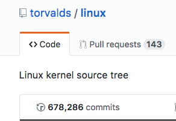
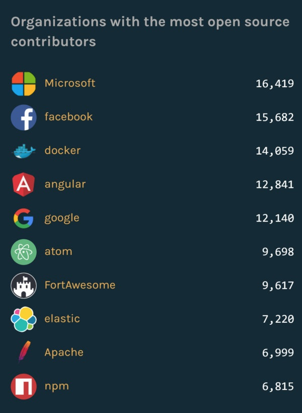

GitHub
Github吉祥物Octocat
GitHub，全球最大的同性交友网站。。。其实应该说是全球最大的社交编程及代码托管网站，说的正式一点呢，GitHub 是一个面向开源及私有软件项目的托管平台，因为只支持 Git 作为唯一的版本库格式进行托管，故名 GitHub。
关于GitHub，如果你是计算机相关专业的话，应该是听过的。上面集齐了很多众多一线互联网公司及业界大佬，比如Linus等，Linus在2011年的时候把整个Linux源代码都托管在了GitHub上，给大家展示一下Linus的commit记录，

你没看错，就是将近六十八万的commit。。。。。。不得不说GitHub的出现带动了一堆开源项目的产生，包括很多业内大佬也在慢慢的向开源靠拢，比如，曾经与开源势不两立的微软，现如今居然成了GitHub上开源项目最多的组织，

上图就是截止到2016年九月八号为止的开源组织的项目排名，微软的开源项目已经超过 Facebook 的 15682 个，进一步拉开了与 Docker、Angular、Google 和 Apache 的距离。
实际上，微软在开源之路上算出发比较晚的。直到 2014 年，微软才开始在 GitHub 上建立账户，这一年，微软宣布了.NET 的开源。在此之前，微软还成立了微软开放技术公司（Microsoft Open Technologies.Inc），这家相对独立的项目也有自己的 GitHub 账户。除了微软自己在GitHub 上的主页之外，微软还创立了一个 microsoft.github.io的网站，用来展示自己在 GitHub 上的开源成果。其中像是 vscode、TypeScript 等等代码仓库（Repos）获得了上万的 Star，在 GitHub 上，Star 的数量和质量是挂钩的。
有这么一种说法，在未来，聘用程序员的方式将发生重大改变，不再是以往包括现在所采取的聘用方式，“在将来，你不再需要简历，人们可以直接通过谷歌来了解你，并且还可以在开源社区里创立自己的个人品牌和声誉。HR通过邮件列表、bug 跟踪表单以及提交到 Mercurial、Subversion 、GitHub和 CVS 仓库的源代码与其他软件工程师进行交流。所有的这些交流，都是公开的，并且可以被谷歌进行索引。”一位工作在红帽公司的员工如是说。
你也许会感到奇怪，这是iOS开发基础教程，关这个代码托管的平台什么事呢？确实这样，在刚开始学习iOS开发的时候，笔者也是一样产生过这样的疑问。导致在做开发的时候没有利用上GitHub等一些代码托管平台上开源的一些第三方库或者工具，导致大大的增加了开发过程中所耗费的时间和精力等不必要的成本。
比如，在你的项目中需要进行网络请求时，你完全可以自己从头开始写 一套网络请求库，写一套在进行网络请求时处理异常的机制等等，这些东西我们都可以自己完成。重点是，当你写完了以后，估计你的项目进度就会拉下一大半，得不偿失。笔者不是不让大家实现这些功能，而是不推荐，业内有句话叫“不要重复造轮子”。
但是呢，很多人会把这句话给理解错了，在实际开发过程中，存粹就去当了“调包侠”了，搞得如果网上没有现成的相关代码，自己就完不成了任务。这样就和上文中笔者所阐述的思想背道而驰了。
总结一句话，不是不让大家造轮子，也不是让大家啥都用现成的。而是说，重新审视产品需求，产品最核心的内容我们要有自己的控，把各个轮子用活，给自己在开发的过程中创造最大的利益。
在使用GitHub中涉及的部分相关术语解释
- Commit（提交）：在指定时间点对系统差异进行的注释 “快照”。
- Local（本地）：指任意时刻工作时正在使用的电脑。
- Remote（远程）： 指某个联网的位置。
Repository (仓库，简称 repo)：配置了Git超级权限的特定文件夹，包含了你的项目或系统相关的所有文件。
Pushing（推送）：取得本地Git提交（以及相关的所有工作），然后将其上传到在线Github。
Pulling（拉取）：从在线的Github上获取最新的提交记录，然后合并到本地电脑上。
- Master (branch)：主分支，提交历史 “树”的 “树干”，包含所有已审核的内容/代码。
- Feature branch（功能分支/特性分支）：一个基于主分支的独立的位置，在再次并入到主分支之前，你可以在这里安全地写工作中的新任务。
- Pull Request（发布请求）：一个 Github 工具，允许用户轻松地查看某功能分支的更改 （the difference或 “diff”），同时允许用户在该分支合并到主分支之前对其进行讨论和调整。
- Merging（合并）：该操作指获取功能分支的提交，加入到主分支提交历史的顶部。
- Checking out（切换）：该操作指从一个分支切换到另一个分支。
因为GitHub是业界非常火爆的一个代码托管平台，所以关于GitHub的使用笔者在此点到为止，对大家做一个简单的介绍，关于Git的相关操作网上有非常多细致的、美观的操作教程，笔者就不做过多的赘述，大家可以参考文末提供的链接进行学习。
以下是笔者收集的一些资源：